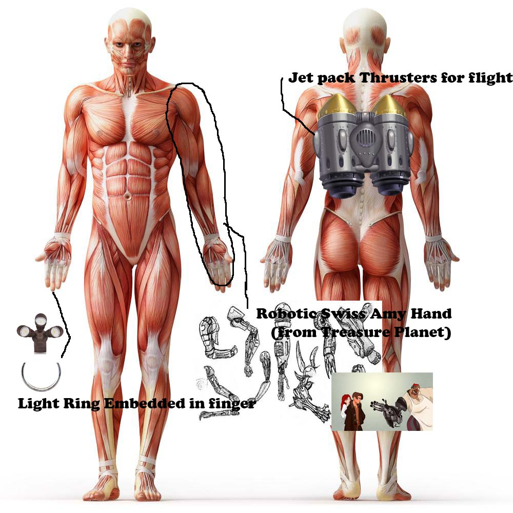
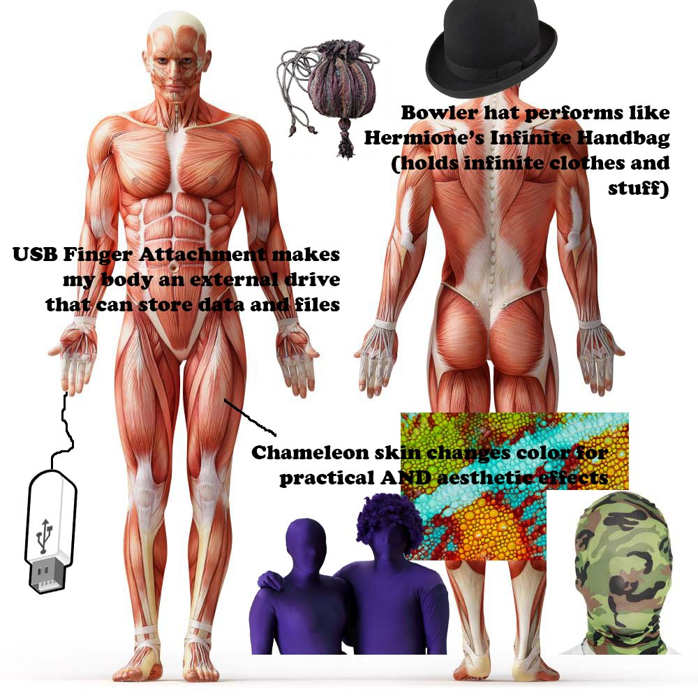

For Project 1 we were supposed use Photoshop and/or Illustrator to create 2 feature diagrams with images and text that illustrate and describe what we would look like, with some bio/mechanical upgrade.

The first diagram was made thinking of my upgrades as practical. I thought about what would be useful upgrades to have on my body if I could have anything. I decided that I could definitely use a jet-pack for easy movement and quick travel time. I also thought about the Swiss Army Hand from the Dreamworks movie Treasure Planet. In the movie the cook Mr. Silver has a mechanical hand that can fold out into a variety of useful tools for his use. He had various things like a spatula, 3 tiny claws, a cleaver, a sword, a cannon, a stove burner/flamethrower, and a clamp. I could have similar devices but I also thought about useful tools like a hammer, tape measure, and other things that are sometimes useful in situations but rarely caried on someone's person. I could carry them with this arm upgrade. Another useful upgrade I gave myself was the light on the ring, which would be attached to the my pointer finger. I would be able to turn it on and off without using my other hand, and I would help in a sticky situation when I need some light in the dark. I also think that having it on the pointer finger would be the best place so that when I point at something I would shine a light in the direction of my pointing finger. It could even have a laser pointer setting too for pointing out small details.
For the list of artists, I thought that my diagram related most to Wafaa Bilal and his 3rd eye in the back of his head. This is because he was altering his body with technology and using it for something useful. The video of Viktoria Modesta also inspired me because she was shown in the video wearing different legs in different scenes. I thought about how useful it would be to have a Swiss Army Leg. I chose to put in on my arm and hand like in the movie however because it sort of folded out of the forearm in the movie Treasure Planet, and I thought about the other legs having to fold out of the shin area of the leg and how if I lost balancebefore your leg folded out I would be missing my leg for balance and still fall. Also the hands are what we use to tinker and manipulate objects so it makes more sense for tools to go there.

For the second upgrade we were supposed to think about aesthetics and the way we would look. For this one I thought chameleon skin would be a fantastic upgrade for both utility and style. I could make myself whatever color or pattern I wanted, even displaying my emotions through my skin! But I also thought about the usefulness of being able to camoflauge into my surroundings. Another upgrade I had was the bowler hat with Hermione's infinite undetectable enchantment on it. I could wear it on my head but I could store useful items inside for retrieval whenever I took my hat off. I would never need a closet for clothes or pockets again! I could take everything with me in my hat. My last aesthetic upgrade was a USB attachment on my finger. I thought about this design for the practical upgrade, but decided that I would also like the way a USB Finger would look. It would make me look like I have a partially electronic hand, and obviously to make it work I would need an upgrade inside my body, but my cyborg-ness would only be visible through this external device. I wouldn't want it to be un-noticeable, so I guess there was something I liked about it aesthetically. I would make it a blue USB with the end of my finger being the drive part that can connect to computers and devices, and there wouldn't be a cord or anything.
For the artists, I think my design relates most to the X Men trailer and Aimee Mullen. This is because the X Men trailer showcases many different powers, but Mistique's was the one that spoke to me. Her powers are very aesthetically based, but she uses them in a very useful and practical way. Aimee Mullen's TED talk was about a similar theme. She takes prosthetic legs, a useful and practical upgrade for someone missing legs to have. She begins to look at them, however, from an aesthetic point of view and realizes there are infinite possibilities in the way she looks thanks to her customizable body parts. I think what I was thinking in this diagram was how to gain the ability to change or affect the way I look while also having practical uses for those upgrades too.
A COOL AND INTERESTING VIDEO: Super Slow Motion Skateboarding Filmed by Adam Shomsky at 1000 fps